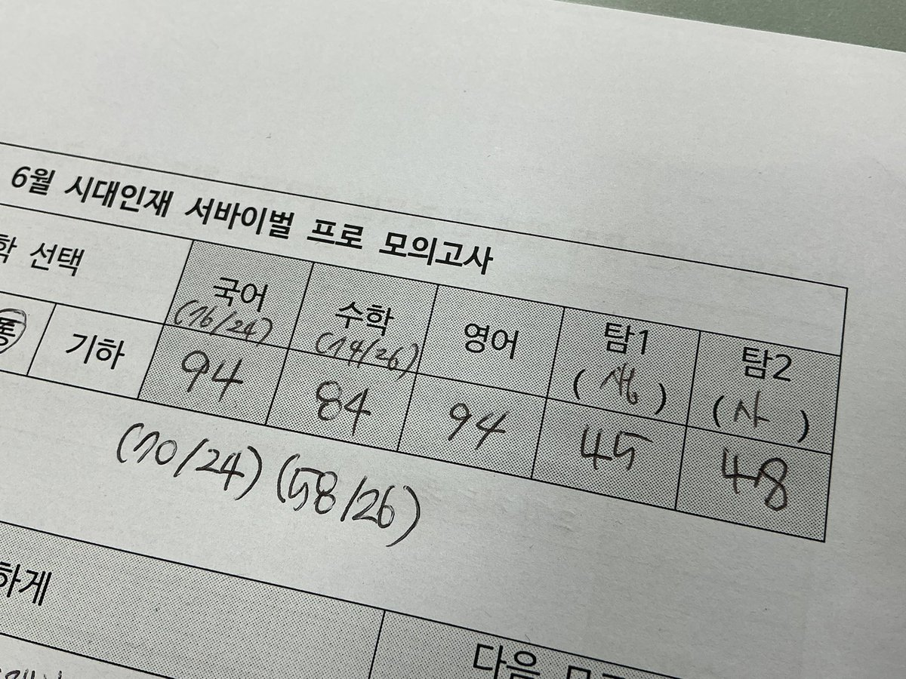

中推忧郁神
@wohaokun555
@paetteumaeddu 好棒

내일
@paetteumaeddu
사설에 일희일비 하고 싶지 않아서 그동안 사설은 한번도 점수를 공개한 적이 없엇는데… (잘본성적말하고다니면무조건떨어지는징크스도있음) 자랑하나만 해도 됩니까
나 작수55354엿는데 이만큼 오름
아빠한테 투자한 보람이 있다 소리 들음 너무 행복해서 날라갈거가툼 https://t.co/vbHC1vNPtN